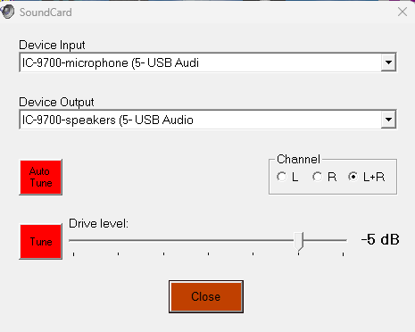
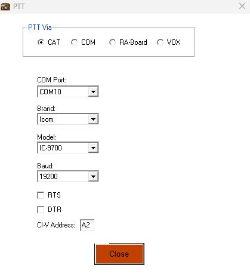

[1] TRUEIcom IC-9700
This page describes some mode-specific settings for the IC-9700 station.
Manuals
Manuals for the IC-9700 can be found here:
Setup
Load the software database.
APRS
Hardware
Rig
- IC-9700
- USB A/B cable
Note
Frequency: 144.390 MHz
Mode: FM-D (digital)
FIL1
Connectors/
USB AF/IF Output/Output Select: AF
USB AF/IF Output/AF Output Level: 50%
MOD Input/DATA MOD: USB
USB Send/KEYING/USB SEND: USB (A) RTS
USB Send/KEYING/Inhibit Timer at USB Connection: ON
CI-V/CI-V DATA Echo Back: OFF
PTT Port Function: PTT Input + SEND Output
PC
- Beelink Windows 11 PC
Antenna
- Comet antenna mounted externally
- Connected via coax patch panel
flowchart LR A[IC-9700] ---|USB| B[Beelink PC] A ---|Coax 2m| C[Diamond MX3000N Triplexer] A ---|Coax 70cm| C A ---|Coax 23cm| C C ---|Coax| D[Comet Vertical 2m/70cm]
Software
PC System Settings
Note
As of 2024-12-xx, the IC-9700 audio devices have been renamed to “IC-9700-microphone (5- USB Audio CODEC)” and “IC-9700-speakers (5- USB Audio CODEC)”
Right click Windows icon; select ‘Device Manager’; Select ‘Ports (COM & LPT)’
Silicon Labs SP210x USB to UART Bridge (COM10)andSilicon Labs SP210x USB to UART Bridge (COM11)are the COM ports for the IC-9700Enter ‘control panel’ in search window; Open ‘Hardware and Sound’; Select ‘Sound’
- Under ‘Recording’ tab
- Confirm that Microphone
IC-9700-speakers (5- USB Audio CODEC)is not default device
- Confirm that Microphone
- Click Properties button; select Levels tab
- Set Microphone level to ~65% (adjust as needed)
- Under ‘Playback’ tab
- Confirm that IC-9700 is not default device
- Click Properties button; select Levels tab
- Set Speakers slider to ~50%
- Under ‘Recording’ tab
Application
I am running direwolf version 1.7.
C:\Users\rick\OneDrive\Documents\direwolf-1.7.0-9807304_i686
APRS-only (non-TT) params
Parameters in C:\Users\rick\OneDrive\Documents\direwolf.conf
ADEVICE IC-9700
CHANNEL 0
MYCALL W3TM-1
MODEM 1200
DTMF
#PTT COM4 RTS
AGWPORT 8000
KISSPORT 8001
#CBEACON every=10 dest=“MORSE-6” info=“de W3TM-tt”
IGSERVER noam.aprs2.net
# Logged-in to APRS-IS to send packets.
IGLOGIN W3TM-1 28828
IGTXLIMIT 6 10
#TTPOINT B001 40.7177087 -77.891919 # mountaintop
#TTPOINT B002 40.7753191 -77.8561127 # South Hills
#TTPOINT B003 40.8055434 -77.88982 # Hoss’
#TTPOINT B085 40.753017 -77.760620 # Little Flat 85
#TTPOINT B076 40.9123402 -78.019739 # Rattlesnake 76
#TTAMBIG BAx
# W3TM
#TTMACRO 001xx AC9386001109AB{dot}B0xxBA1
# W3EDP ————————————
#TTMACRO 011xx AC9333701173AB{dot}B0xxBA1
# N3LI ————————————
#TTMACRO 021xx AC6354002293AB{dot}B0xxBA1
# W3SWL
#TTMACRO 031xx AC9379501245AB{dot}B0xxBA1
# WA7HUB
#TTMACRO 041xx AC9274821322AB{dot}B0xx*BA1
#TTOBJ 0 IG
#CHANNEL 0
#DWAIT 100
Operating
- Switch to 145.390 MHz, FM-D mode. Note: Memory channel 10 has this frequency but not FM-D stored!
- Launch Direwolf from desktop
- Confirm that Direwolf has connected to audio devices.
Winlink Express
Rig
- IC-9700
- USB A/B cable
Note
Frequency: 145.090 MHz (this frequency is stored in one of the memories)
Mode: FM-D (digital)
Connectors/
USB AF/IF Output/Output Select: AF
USB AF/IF Output/AF Output Level: 50%
MOD Input/DATA MOD: USB
USB Send/KEYING/USB SEND: USB (A) RTS
USB Send/KEYING/Inhibit Timer at USB Connection: ON
CI-V/CI-V DATA Echo Back: ON
PTT Port Function: PTT Input + SEND Output
PC
- Beelink Windows 11 PC
Antenna
- Comet antenna mounted externally
- Connected via coax patch panel
Software
PC System Settings
Note
As of 2024-12-xx, the IC-9700 audio devices have been renamed to “IC-9700-microphone (5- USB Audio CODEC)” and “IC-9700-speakers (5- USB Audio CODEC)”
# Right click Windows icon; select ‘Device Manager’; Select ‘Ports (COM & LPT)’
Silicon Labs SP210x USB to UART Bridge (COM10) and Silicon Labs SP210x USB to UART Bridge (COM11) are the COM ports for the IC-9700
# Enter ‘control panel’ in search window; Open ‘Hardware and Sound’; Select ‘Sound’
# Under ‘Recording’ tab 1. Confirm that Microphone IC-9700-speakers (5- USB Audio CODEC) is not default device 2. Click Properties button; select Levels tab 3. Set Microphone level to ~65% (adjust as needed)
# Under ‘Playback’ tab 1. Confirm that IC-9700 is not default device 2. Click Properties button; select Levels tab 3. Set Speakers slider to ~50%
Application(s)
| package | version |
|---|---|
| Winlink Express | 1.7.20.0 |
| VARA FM | 4.3.8 |
Winlink Express parameters.
My Callsign: W3TM
My Password: *******
Password recovery email: rogilmore@mac.com My Grid Square FN10BT
Winlink Express registration key: HIDDEN
There are many other parameters but these are the most important ones.
- VARA FM
VARA FM Settings
Under Settings VARA Setup…
TCP Ports: Command: 8300
TCP Ports: Data: 8301
FM System: NARROW
Digipeater:
Retries: 2
VARA Licenses:
Callsign: W3TM
Registration Key: *******
Soundcard…
Device Input: Microphone (4- USB Audio CODEC)
Device Output: IC-9700 (4- USB Audio CODEC)
PTT…
PTT Via: CAT'</br> Brand:Icom</br> Port:COM10</br> Model:IC-9700</br> Baud:19200</br> CI-V Address:A2`
Oddly enough, RTS is unchecked.


Operating
- Switch to memory channel 11 (145.090 MHz, W3SWL-10), FM-D mode
- Launch Winlink Express from desktop
- Open Session: Vara FM Winlink
- Check rig RF power (10W is more than sufficient)
- When Var FM Winlink Session window opens, confirm that W3SWL-10 @ 145.090 is selected
- Press Start button to initiate QSO.
- Turn up AF gain to monitor QSO. You will hear sound from W3SWL-10, but not the output
Packet
Rig
- IC-9700
- USB A/B cable
Note
Frequency: 145.030 MHz (this frequency is stored in one of the memories)
Mode: FM-D (digital)
The following settings do not change from Winlink or APRS-tt (via Direwolf)
Connectors/
USB AF/IF Output/Output Select: AF
USB AF/IF Output/AF Output Level: 50%
MOD Input/DATA MOD: USB
USB Send/KEYING/USB SEND: USB (A) RTS
USB Send/KEYING/Inhibit Timer at USB Connection: ON
CI-V/CI-V DATA Echo Back: ON
PTT Port Function: ’PTT Input + SEND Output`
PC
- Acer Windows 10 laptop
Antenna
- Comet antenna mounted externally
- Connected via coax patch panel
Software
PC System Settings
Note
As of 2024-12-xx, the IC-9700 audio devices have been renamed to “IC-9700-microphone (5- USB Audio CODEC)” and “IC-9700-speakers (5- USB Audio CODEC)”
# Right click Windows icon; select ‘Device Manager’; Select ‘Ports (COM & LPT)’
Silicon Labs SP210x USB to UART Bridge (COM10) and Silicon Labs SP210x USB to UART Bridge (COM11) are the COM ports for the IC-9700
# Enter ‘control panel’ in search window; Open ‘Hardware and Sound’; Select ‘Sound’
# Under ‘Recording’ tab 1. Confirm that Microphone IC-9700-speakers (5- USB Audio CODEC) is not default device 2. Click Properties button; select Levels tab 3. Set Microphone level to ~65% (adjust as needed)
# Under ‘Playback’ tab 1. Confirm that IC-9700 is not default device 2. Click Properties button; select Levels tab 3. Set Speakers slider to ~50%
Application
- UZ7HO version 1.13 SoundModem
Note
SoundModem parameters.
# Settings menu: Devices Sound Card: Output device: IC-9700-microphone (5- USB Audio CODEC
Sound Card: Input device: IC-9700-speakers (5- USB Audio CODEC
Sound Card: Single channel output
Sound Card: Color waterfall
Server setup: AGWPE Server Port: 8000 and Enabled Server setup: KISS Server Port: 8001
PTT Port: Select PTT port: COM4
# Settings menu: Modems
- EasyTerm by UZ7HO Version 0.49b
Note
EasyTerm parameters.
# Settings menu: Station Setup
Terminal Callsign: W3TM
Beacon Setup: Destination: BEACON
Beacon Setup: Interval: 30
Beacon Setup: Ports: `1’
TNC Setup: Host: 127.0.0.1
TNC Setup: Port: 8000
TNC Setup: Paclen: 80
Operating
- Switch to memory channel 7 (145.030 MHz, W3YA-3 Packet), FM-D mode
- Launch SoundModem.
- Launch EasyTerm
- Check rig RF power (10W is more than sufficient)
- W3YA-3 and W3PHB-3 beacon regularly, so it’s good to see if you can decode them.
- When the channel is clear, press the ‘Connect’ button
- Select target from ‘CallTo’ menu, usually
W3YA-3orW3PHB-3 - Press the ‘Connect’ button to connect.
- Turn up AF gain to monitor QSO. You will hear sound from the packet BBS, but not your own output (unless you have turned up the monitor level on the rig).